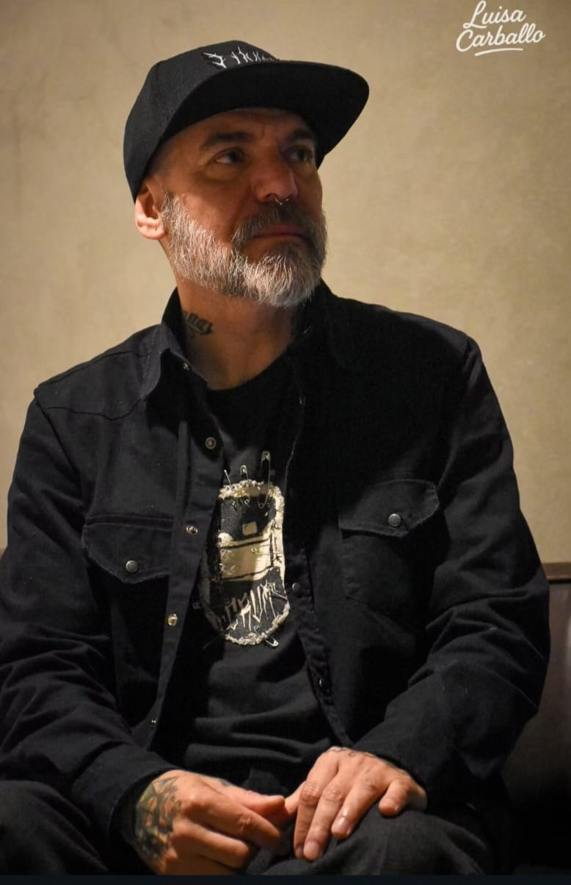
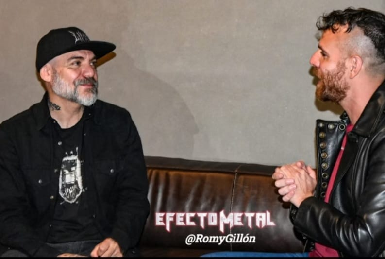
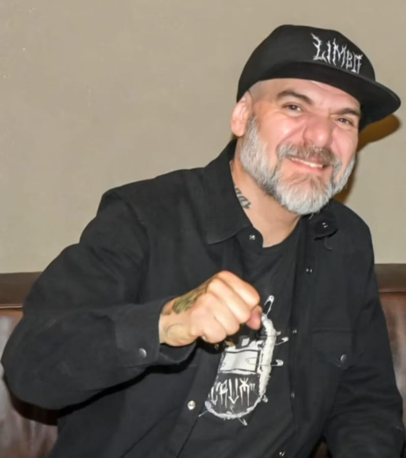
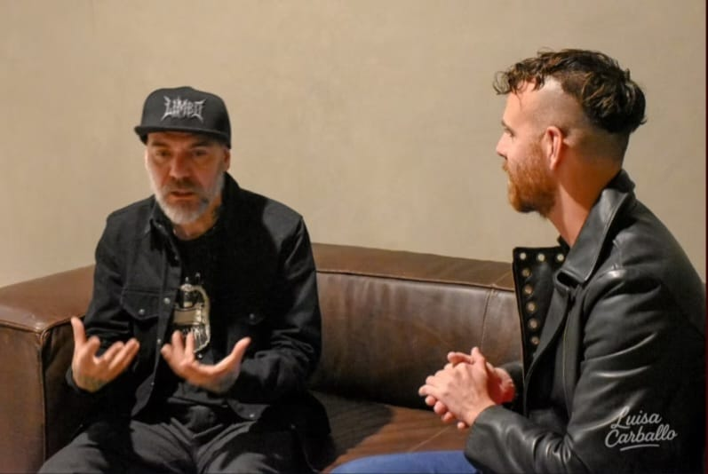
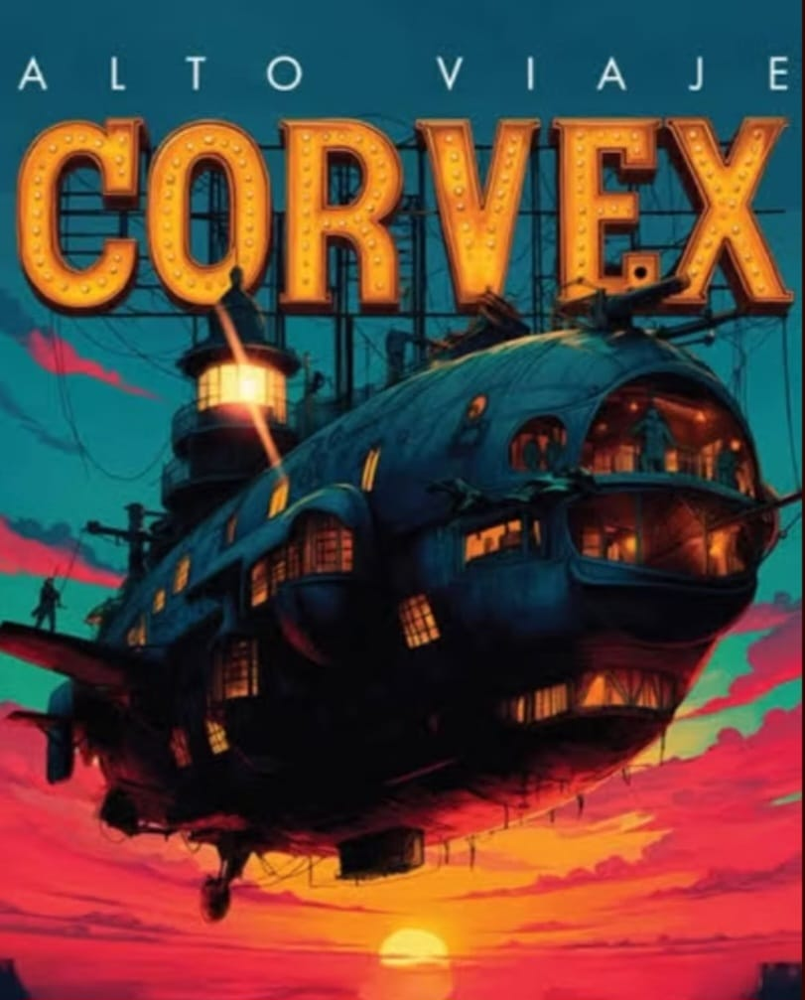

Se venía la presentación del disco de Corvex y la cita fue este pasado 6 de noviembre en un local de Paternal. Llegamos puntuales y tuvimos la oportunidad de entrevistar a Marcelo Corvata Corvalán (ya teníamos nota pactada) para que nos contara todo lo referente a "Alto Viaje" y a su proyecto Corvex. Luego de esto, hubo un lunch para agasajar a la prensa, proyección de videos de los temas adelanto y una conferencia de prensa general. Una jornada impecable y como corresponde a un gran referente del género como él lo es. A continuación, lo expresado por el músico en una charla muy amena.

¿Qué expectativas tenes con el lanzamiento de "Alto Viaje" y cómo pensás que le va a llegar a la gente?
Considero que el público va a tener una buena recepción hacia este disco porque se caracteriza por tener mucho power y adrenalina en las composiciones músicales y liricas. La verdad es que hay cosas que se están dando sobre la marcha y estamos enfocados en el presente. La banda se acaba de armar, es un proyecto en donde inicialmente me di el gusto de compartir canciones con amigos a los cuales admiro y quiero mucho. De esa manera conocí al Tano Farelli y Cristian Borneo, que es un gran baterista y sesionista que gira por el mundo. Participó en las primeras dos canciones que fueron "Volver a Nacer" y "Tregua".
La primera la grabamos a distancia en el año 2020 y superó nuestras expectativas con la repercusión que tuvo. Luego me encontré con Marcelo Cocamonte ("El Coca"), legendario ingeniero de sonido que trabajo con Vetamadre y Divididos, y al toque se puso el laburo al hombro junto a su socia Panda Eliot, para armar otras composiciones.
La cuarta canción, "Flash Trash", contó con la particularidad de ser íntegramente grabada con instrumentos y equipos fabricados por Trash Instruments, los cuales están hechos con materiales reciclados y objetos que se rescataron de la basura. Lo grabamos en el estudio El Pie y fue mezclado y masterizado por Luciano Farelli en Oceanía Récords.

¿Que personas reconoces como inspiradoras?
Tengo un montón de amigos con los cuales somos "conspirólogos". Si bien en un principio fueron los Dead Kennedys y luego Megadeth, hoy en día mi influencia más directa es mi mujer y compañera Nancy. Ella me va diciendo: "che hoy tenemos que ayudar a estas personas" o debemos hacer tal o cual cosa. Nosotros congregamos en una iglesia cristiana, entonces todo el tiempo ves un montón de realidades que te ayudan a bajar y priorizar esas cosas que resultan inspiradoras. Cuando llego a mi casa les cuento a los chicos las cosas que vivencié. Toda esa data me atraviesa y me inspira para componer canciones o manifestarlo de alguna manera. Aprender a mirarse a uno mismo y ponerse en el lugar del otro, sirve para accionar o replantearse cosas que muchas veces priorizamos sin darnos cuenta, que no amerita ponerle tanta energía.
¿Tenes pensado salir de gira con este proyecto para presentar el álbum?
En este momento, con Arde la Sangre estamos cerrando el año. Saldremos de gira por Perú y México y cuando volvamos la idea es ir a Uruguay y cerrar el año con algunos shows por el conurbano. En enero o febrero empezamos a grabar el nuevo disco de ALS y estamos muy entusiasmados porque va a ser un discazo. Sobre la marcha, la idea es ir metiendo algunas fechas con Corvex, pero antes queremos que las personas escuchen bien el material para que lo tengan incorporado.
¿Que desafíos te propusiste con este proyecto?
Uno de mis sueños es salir con toda la monada, ir de pueblo en pueblo y tocar en la costa y en diferentes lugares. Después de Cromañon, se hizo todo más difícil por los permisos, las restricciones y la seguridad. En ese momento hacíamos cosas y no nos dábamos cuenta. Pero la idea sería esa.
"Flash Trash" es una canción íntegramente compuesta con instrumentos y amplificadores reciclados.
¿Como fue vivenciar esa experiencia? ¿Encontraste alguna diferencia con respecto a otras composiones?
Despertó un montón de ideas y colores que terminó siendo muy favorable a la hora de definir el concepto compositivo. En su momento fuimos al estudio y teníamos algunas maquetas hasta venderla y que salga a la luz. Tiene mucha mística esta canción, que en realidad son dos en una, por los matices en los cuales va transitando. Empieza muy tranquila, y agarra ritmo más rocker en el transcurso de los 7 minutos. El Chapu tuvo mucha incidencia, por tocar y traducir las maquetas de todo lo que le iba pasando. Lo que destaca a este proyecto, es que arrancó grabando las composiciones con la voz, una guitarra o lo que se tuviera a mano, y eso marcó el rumbo de para donde va a ir la canción. Hay algo que nace de manera orgánica y sentida.
Justamente lo que sucede es que me estoy descubriendo en otro lugar.
¿Sos permeable para escuchar ideas a la hora de componer tus canciones?
Siempre compuse en formato banda y lo hice sobre la marcha y en base a lo que iba sucediendo. En la década del 80 compuse con mis amigos de Dulce Veneno, que fue mi primera banda, y eran amigos del barrio. Después en el 92, grabé mi primer disco con Andrés Gimenez en donde éramos una dupla. Él hacía la música y yo las letras. Además, le tiraba algunos riffs con el bajo, y de esa manera ensamblábamos las ideas. Con Tery y Andy, en Carajo, éramos una sociedad, tocando en la sala y en vivo, y contábamos con Ale Vázquez en su rol de productor, que era la cuarta pata de la mesa para que las cosas funcionaran como pretendíamos.
En ese sentido, después del primer disco de Corvex, quizás empiece a pasar otra cosa, a manejarse más ese diálogo de banda en un ensayo. De hecho ya está pasando.

¿Cuantas canciones va a tener el álbum?
Tiene nueve canciones, es rápido y corto, a lo vieja escuela. Son las que tenían que quedar, algunas quedaron afuera, otras las hicimos, pero consideramos que no convivían tanto con el formato de este disco. Me pareció que tenía el equilibrio justo en nuestra búsqueda. La duración es de 32 minutos y considero que va a mantener el fuego vivo. El termómetro, para nosotros, va a ser cómo lo reciba la gente. En este momento no busco una meta comercial ni marquetinera, es un gusto que me estoy dando porque estoy a punto de cumplir 54 años. Me encanta haberme animado simplemente a dar el pasito y ver como las cosas van creciendo.
Por otro lado, Arde la Sangre está creciendo y tenemos un montón de compromisos, shows y la salida del álbum en 2026.
¿Quedaron canciones afuera?
Tengo notas de voz e ideas en el celular con las que empezamos a trabajar, en realidad, habría material para otro disco más. En marzo junto a Corvex, tenemos la idea de sumarnos a la productora Mural Sessions para realizar sesiones dentro de un estudio, grabar y tirar canciones inéditas.

¿Que planes tenes para cerrar el año en cuanto a Corvex y Arde la Sangre?
La idea era sacar el álbum ahora y en enero, una vez que la gente se familiarice con las canciones de "Alto Viaje", salir a tocar. En el verano tenemos ganas de tocar en fechas gratuitas para la gente, generar unión con alguna banda colega.
Casualmente, hoy está sacando un álbum Brenda Martín de Eruca Sativa, que es una gran amiga, la quiero mucho y tiene un gran talento. Le dije: "boluda, tenemos que meter una fechita juntos".
No hay nada planificado, y sobre la marcha nos iremos sumando a las fechas que se vayan dando. Queremos darle espacio para que la música llegue a los oídos de la gente.

Por: Nahuel Pizarro
Fotos: Romina Gillón y Luisa Carballo

Testament es (¿quién puede discutirlo?) un ícono absoluto del Thrash Metal, una banda que según muchos ha debido formar parte junto a Exodus de aquel icónico “Big Four”, una banda que ha sabido sortear los vaivenes de la industria, del tiempo y hasta de salud de sus integrantes, manteniéndose siempre fieles a sus raíces, aguerridos y dispuestos a todo. Hoy, 5 años después de aquel “Titans of Creation” arremeten con un álbum llamado “Para Bellum”, el cual es casi un manifiesto donde Testament lejos de pensar en tirar la toalla demuestra que sigue más viva que nunca y que va por más. En Efecto Metal tuvimos la oportunidad de conversar nuevamente y en exclusiva con el carismático Chuck Billy sobre “Para Bellum” y esto fue lo que nos dijo.
Hola Chuck, ¿Cómo estás?, mi nombre es Joad Manuel Jiménez, directamente desde Buenos Aires Argentina para la revista Efecto Metal. Quizá no lo recuerdes, pero hace algún tiempo tuvimos también una amena charla para la revista y…
¡Claro!, para la promoción de “Titans..” (of creation), lo recuerdo, ¿Cómo estás?
Bien, muy bien, gracias. Bueno, vamos directo al punto, que es (por supuesto) el álbum “Para Bellum”, me gustaría que conversáramos un poco sobre los diversos detalles de este trabajo y de lo que podemos esperar de él cuando finalmente esté disponible en su totalidad en el venidero mes de octubre…
Me parece, perfecto (risas).
Como te imaginarás, gracias a la gente de Nuclear Blast pude escuchar “Para Bellum” por completo y honestamente es uno de los discos más intensos de toda la carrera de Testament. Es un disco que vas mucho más allá de ser meramente “Thrash Metal”, es agresivo y a la vez muy introspectivo, tiene una especie de dualidad muy interesante. ¿Podrías comentarme un poco que fue lo que motivó esta energía, este nivel de intensidad y de diferentes dinámicas que se sienten en el disco?
Mmm, creo que todo parte de Eric Peterson por supuesto. Sobre todo en este disco, Eric pasó un montón de tiempo con Chris (Dovas), ya sabes, haciendo diferentes jammings, probando diversas cosas, riffs e ideas y bueno, la verdad es que Chris (Dovas), es un baterista extraordinario que puede tocar literalmente lo que sea y eso ha sido como una bendición para Eric; me refiero al hecho de contar con un baterista al que le puedas decir “prueba esto, prueba lo otro” y bueno también está el hecho de que Chris (Dovas), tiene apenas 27 años ¿no? (risas). Digamos que por ahí creció en una generación de metaleros muy distinta a la nuestra o al menos a lo que estábamos acostumbrados ¿no?, quizá más actualizada, más abierta, con diferentes cosas, diferentes estilos amalgamados y probablemente le haya inyectado un poco de eso a la banda, a la música y también a Eric. Todo esto necesariamente debe haberlo inspirado, empujado digamos a ir mucho más allá de lo que había ido hasta ahora, por lo que creo que ese es el factor clave para que este disco sea lo que es, o al menos eso creo. También hay que decir que antiguamente yo solía desafiar constantemente a Eric con la música y los riffs, siempre tratando de trabajar muchísimo en todo lo concerniente a los arreglos de la música, las estrofas, en fin, pero en el caso de “Titans...”(of Creation) no lo hice y las canciones salieron super bien, entonces al momento de trabajar en “Para Bellum” dijimos “hagamos lo mismo”, así que fue más tipo “ok, denme la música, denme la música” (risas), después de eso fue escribir, escribir y escribir, al final tenía un montón de música, letras y demás así que básicamente lo que trate de hacer fue ir encontrando el camino a través de ellas dejando que fluyesen una por una.

Ahora que mencionaste a Chris Dovas, su trabajo en la batería es muy impresionante, su velocidad, precisión y versatilidad es una cosa de locos y si bien me comentaste sobre su influencia en la forma de ver y crear las canciones en Eric (Peterson), me gustaría saber si tú también te llegaste a sentir influenciado o desafiado de alguna manera por él, ¿crees que esa inyección de “sangre nueva” en la banda que aportó Chris, te hizo replantearte tu forma de cantar y de abordar las canciones?
¿Sabés que sí?, de hecho, es muy probable (risas), la música se sentía muy fresca, muy “moderna” (si es que cabe el término), ¿tú qué crees?
Si, quizá moderno sea lo más apropiado aunque no esté del todo seguro (risas).
Ok, bueno, se sentía así, era diferente, entonces quizá no había que cantar todo el tiempo con la misma voz o el mismo tipo de voz, quizá lo mejor era ir viendo que pedía la canción, ya sabés, en lugar de ver todas las canciones a la vez las fui viendo una por una, escuchándolas, tratando de sentirlas, para así buscar que podía funcionar mejor a nivel vocal para cada una. Hacerlo así hizo que el disco se sintiese muy variado, y no es simplemente decirlo por decirlo, no, desde el principio se siente así, todo va fluyendo y desarrollándose, lo cual me hace pensar que bueno, todo se debe a esa forma de trabajar y de la combinación entre Eric (Peterson) y Cris (Dovas); hicieron tantos riffs y tantas canciones que, bueno, para serte honesto ya tenemos dos temas para un próximo disco (risas).
¿En serio?, pero si “Para Bellum” ni siquiera ha sido lanzando aún (risas).
Si, (risas), es en serio, de hecho, cuando volvamos a casa en noviembre o diciembre, ambos volverán a trabajar juntos y seguirán escribiendo canciones así que si, ya estamos trabajando en un próximo disco (risas)
¡Genial!; eso es estar realmente inspirados. Volviendo a tu enfoque vocal en las canciones de “Para Bellum”, me sorprendió justamente el que utilizases diferentes voces, fue como si estuvieses pensando en un nuevo concepto y redescubriendo tus capacidades como vocalista. Es algo que se nota mucho a lo largo del disco.
Si, la verdad es que si, de hecho, en canciones como “Nature of the Beast” o “Room 117”, utilizo una voz un poco más relajada en lugar de una voz poderosa; digamos que me contengo y trato de que sea algo mucho más suave, algo que no creo haber hecho en nuestros discos anteriores o al menos no de manera frecuente porque siempre utilicé una voz potente. Sin embargo, ese enfoque funciona bien y considero que es el correcto para esas canciones, las cuales (dicho sea de paso) han sido un verdadero desafío para mí, ya que lo más fácil de hacer era irme por el lado de la agresividad y la fuerza sin preocuparme demasiado por las melodías, pero si te soy honesto habría quedado espantoso, por lo cual me tomé mi tiempo, me desafié a mí mismo y traté de dar siempre lo mejor en cada canción.
Has mencionado varias veces la palabra “desafío”, ¿hay alguna canción que hayas sentido como un verdadero desafío tanto a nivel personal como vocal en este disco?
Mmm, no sé si un desafío como tal, pero si, mmm.., supongo que sería “Meant to Be”, porque era, a ver, (risas), la primera vez que escuché la canción y vi que duraba casi ocho minutos pensé: “Carajo, hay que meter un montón de letra aquí, debe tener un montón de letra” (risas), pero, cuando escuché lo que serían las estrofas y conseguí tanto la melodía como la métrica no quise exagerar ¿sabes?, a medida que iba fluyendo me dije “ok, se siente bien, se va sintiendo bien así”, no hace falta cantar más, pongamos algunos solos de guitarra y dejemos más espacio para la música en sí misma”. Así que nada, al final, quedó perfecta y si, ahora que vuelvo sobre ello, creo que en general fue un desafío enorme (risas).

Es una gran canción y honestamente si me decías que era otro tema, igual te habría preguntado por “Meant to Be”, no solo porque es un tema con muchos arreglos sino por ser una balada, lo cual no es un dato menor y ciertamente tampoco es algo demasiado frecuente dentro de la discografía de Testament. De hecho, desde cierto punto de vista, lanzar o incluir ese tema puede ser visto como un riesgo, sobre todo teniendo en cuenta que la banda es un ícono del Thrash y que muchos fanáticos son realmente radicales. ¿Consideras que un tema como “Meant to Be” es un riesgo para una banda como Testament?
Si, de alguna manera lo es, pero… mmm a ver, creo que hoy por hoy escribimos la música para nosotros mismos, no para deprimir a los demás o exclusivamente para los fans porque al final es imposible complacer a todo el mundo ¿cierto?, así que supongo que es importante sentirnos satisfechos con nosotros mismos y lo que hacemos ¿no crees?
¡Obvio!, es así.
Bueno, entonces, si bien una canción como “Meant to Be” puede ser… mmm a ver, fíjate esto, como recordarás, el año pasado estuvimos haciendo la gira de aniversario de “Practice What You Preach” y tocamos cosas como “Return to Serenity”, “The Ballad”, “Trail of Tears”, “City of Angels”. Estuvimos tocando estos temas y otros más en vivo en Estados Unidos y funcionaron increíblemente bien, la gente estaba encantada. Cada vez que las tocábamos las cámaras se levantaban y hacían videos de las canciones, era una locura, yo veía todo esto y pensaba “les gusta, en verdad les gusta que toquemos estas canciones y lo demuestran” (risas). Honestamente es una lástima que nunca hayamos tenido las pelotas de tocar esos temas en vivo, pero bueno, desde que comenzamos a tocarlos el año pasado y también iniciamos todo el trabajo del disco nuevo para mí fue “¿saben qué?, me siento bien y tengo fe en esto, me siento bien haciéndolo” Así que cuando escuché por primera vez “Meant to Be”, pensé “¡wow!, que hermosa canción, es muy muy buena” y en verdad estaba absolutamente emocionado de poder trabajar en ella, pero en definitiva era todo un reto porque era muy larga (risas).
Es una gran canción, claro que sí, de hecho, no creo que el disco tenga una canción que se pueda etiquetar como floja, “Para Bellum” es un álbum muy intenso donde (si me permites decirlo) se percibe una sensación de “caos controlado” (aunque suene contradictorio).
Si, es así (risas).
En relación al arte de la portada realizado por Eliran Kantor, hay un montón de elementos que perfectamente encajan con las realidades de hoy en día, un ángel que parece hecho gracias a los misiles, un halo nuclear, y un grupo de personajes que fungen como devotos, etc. ¿El proceso creativo vino a través de las canciones o fue precisamente el desarrollo de este concepto lo que motivó la dirección musical y la inspiración de las letras del disco?, en otras palabras, ¿la portada vino antes o después de la creación musical?
La portada vino después, aunque ciertamente vi algunos bocetos antes, si bien queríamos una explosión nuclear no sabíamos lo del ángel. Te seré honesto, si me hubiesen dicho al principio sobre el ángel, el boceto y el concepto habría pensado, “bueno, eso no es muy metal” (risas), pero cuando vi el producto final, dije, “¡Wow!, es genial, es realmente bueno”, pasa que normalmente dejo que Eric (Peterson) se encargue de todo eso. Es más, originalmente el álbum iba a llamarse “Infanticide AI”, pero pensamos que eso dejaba la puerta abierta para que la gente la gente dijera o pensara cosas como que la portada y la música habían sido generadas a través de la IA, así que decidimos no seguir esa dirección, finalmente, cuando escribí “Para Bellum” (que es una de las últimas canciones del disco), esa frase “Prepárate para la Guerra”, le dio sentido a todo, ya sabes, la explosión, el ángel con misiles, en fin, nos dimos cuenta que era algo más enfocado en la guerra y terminamos cambiando el título del disco a “Para Bellum” (Prepárate para la Guerra). Una vez más dejé que Eric (Peterson) y Eliran (Kantor) lo manejasen, porque ya sabes lo que dicen “demasiados cocineros en la cocina arruinan el caldo” (risas).
Creo que tomaste la decisión correcta (risas) y si, cuando escuché el disco el titulo tuvo mucho sentido, digamos que es perfecto (risas). Ahora bien, ya que mencionaste el tema de la IA, y más teniendo un tema como “Infanticide AI” en el álbum, ¿Cómo ves el uso de la inteligencia artificial en la música? ¿Te parece una buena herramienta o una amenaza para la música y los artistas en general?
Bueno, creo que en lo que se refiere a los artistas en general, ya sabes, la música, la pintura, la escritura de poemas, libros, en fin, eso no… en definitiva ese no es el camino a seguir, pero la verdad es que hoy en día la IA afecta todo, absolutamente todo lo que nos rodea, está casi en cada aspecto de nuestras vidas. De hecho, en San Francisco hay taxis sin conductores… Los probé y fue algo absolutamente aterrador ¿sabes?, estás ahí y no hay nadie manejando el auto, ¡una locura! Totalmente, de hecho, eso que dices me recuerda a una película de Arnold Schwarzenegger, llamada “Total Recall”, donde los taxis eran manejados por robots. Créeme que esas películas “futuristas” que vimos en una época ahora son realidad, fui a comer a un restaurante y vi a un robot limpiando las mesas, levantando los platos. Entonces es más que obvio que esto nos afecta a todos, pero lo que resulta más aterrador (tal y como está planteado en la canción “Infanticide AI”), es la posibilidad de que la tecnología intente suprimir a la próxima generación, tomar el control y reemplazarnos. Es absolutamente espeluznante, ¿por qué?, porque la IA se basa en la recolección de información ¿no?, y trata de recolectar cada vez más y más información, entonces ¿qué pasará cuando recolecte la suficiente información como para que pueda tomar decisiones por sí misma?. Es realmente aterrador pensarlo.
Y si, es inevitable no sentir miedo al respecto. En fin, en nuestra última charla tocamos el tema del cáncer, lo que fue para ti atravesar por todo ese proceso, etc, luego de todo el tiempo que ha pasado, ¿cómo esta experiencia ha cambiado tu forma de encarar no solo la fase artística sino la vida en general? ¿Cómo manejas esa dualidad de agresividad/vulnerabilidad, no solo en tus letras sino en la vida cotidiana?
Indudablemente sobrevivir al cáncer hace que veas la vida desde una perspectiva diferente, sin embargo, para nosotros musicalmente fue, mmm a ver ¿Cómo explicarlo?, después de batallar con el cáncer y vencerlo, vino la reunión del Testament original, los 5 miembros y fue, ¡wow!, porque a ver, cuando estaba enfermo, llegué a pensar que mi carrera musical había terminado. Me miraba en el espejo y no era ya ese tipo que conocía en Testament ¿entendés? Entonces nada, tener la oportunidad de estar de vuelta, todos juntos, para mí fue genial, recuerdo pensar en esa reunión “ok, esto se siente bien”, y luego en nuestro primer ensayo fue como, “¡wow!, esto se siente como al principio”, en verdad fue muy emocionante, todos sentíamos que las cosas estaban pasando por una razón y que podríamos terminar lo que habíamos comenzado años atrás, todos juntos. Al final, lamentablemente Louie (Clemente), no pudo ser el baterista por problemas de salud, pero sigue estando ahí, sigue con nosotros, es uno de los mejores amigos de Eric (Peterson), y siempre da su opinión sobre la música que hacemos y es una opinión con peso. De hecho, siempre está presente en los shows. No terminó siendo el baterista final, por ese problema, pero es uno de nosotros.

¡Qué bien!, no sabía eso, es genial.
Si, así es (risas), siempre está con nosotros y aunque con Greg (Christian), hemos perdido la comunicación sigue siendo un hermano, alguien a quien queremos mucho y a quien siempre le deseamos lo mejor. Ahora bien, volviendo a tu pregunta, después de eso, la vida fue diferente, todo fue diferente, comenzamos no sé, quizá a ser un poco egoístas, (risas), pero comenzamos a hacer música de manera distinta, pensando en nosotros mismos de una manera u otra, aprovechando cada momento al estar juntos mientras podíamos y luego, bueno, el tiempo vuela, como bien sabes, así que de repente cuando nos dimos cuenta habíamos hecho una gran gira y llegaba el momento de hacer otro disco y fue como “ok, hagámoslo”, de nuevo, el tiempo vuela (risas), así que hicimos otra gira y una vez más llegó el momento de hacer otro disco así que, supongo que nos hemos mantenido viviendo un día a la vez. Honestamente creo que somos muy afortunados por poder hacer esto y que, aunque parezca obvio, hemos tenido muchísima suerte por poder seguir escribiendo buena música, o sea creo que hemos escrito muy buenos discos desde aquel “The Gathering” ¿no?,(risas). Hemos sabido seguir adelante, hasta el punto en el que estamos hoy así que este disco “Para Bellum” para mi es como una especie de declaración, algo como, no sé, tal vez “influencia” es la palabra correcta pero no estoy seguro, porque es como un reflejo de lo que pasa hoy, todo esto de la música moderna, las bandas nuevas, es… es como si cerrásemos el circulo, porque probablemente hemos inspirado a muchas de esas bandas y hoy en día esas bandas nos inspiran a nosotros ¿se entiende?
¡Totalmente! Y ciertamente (como ya te comenté) “Para Bellum” se siente así, una mezcla entre lo clásico y lo moderno.
Gracias por eso (risas).
No hay de qué. Hace un rato me hablaste de la energía de los shows en vivo y hace poco más de un mes, pudimos disfrutar de Testament en Buenos Aires una vez más. Sé perfectamente que ya hemos tocado este tema en nuestras conversaciones anteriores, pero es inevitable preguntarte por tu opinión sobre el público argentino y saber si tienes algún recuerdo en particular de nuestro país.
Bueno, (risas), como te imaginarás lo primero es el asado, (risas), es el mejor, siempre lo disfrutamos mucho y es algo que esperamos con ansia ya que todos somos carnívoros (risas). Ahora bien, el público es una locura, aunque en líneas generales, hay que reconocer que cada vez que vamos a Sudamérica o Centroamérica, los fans son mucho más entusiastas que en cualquier otra parte del mundo, son increíbles, son esa clase de fans que están en las afueras del hotel, cuando llegas al aeropuerto e inclusive cuando te vas, ¡es una locura! ¡Es algo que ya no pasa en ningún otro lugar del mundo, aunque no lo creas! En serio, es impresionante ver como todo ese entusiasmo por la banda sigue ahí, presente en la gente a través del tiempo, por lo que no puedes comportarte como un idiota y decirles, “No tengo tiempo”, ¡vamos!, al contrario, tienes que aprovechar y decirles, “Realmente aprecio que estén aquí por nosotros” y disfrutarlo, digamos retribuirles ese tiempo que han invertido en vernos porque al final nosotros estamos para ellos y ellos para nosotros, por lo que es absolutamente genial cuando alguien se aparece por allí. No te lo voy a negar, muchas veces los promotores te dicen, “No se preocupen, mantendremos a los fans lejos”, y nosotros les decimos, “No, no, no lo hagan, al contrario, queremos verlos, queremos firmar cosas, queremos hablar con ellos”. Es algo que los fans aprecian y además si después de 40 años, todavía hacen eso, ¿cómo no voy a estar allí?, no, no hay forma, así que ¡claro estaré allí dedicándoles mi tiempo también!
¡Muy bien! Y a ver, luego de tantos años, discos, giras, ¿cómo logras seguir sorprendiéndote y yendo más allá con la música? ¿Cómo logras mantenerte siempre al margen de volver a lo mismo y repetirte musicalmente hablando?, te pregunto porque cada vez que hablamos te noto con la emoción al máximo sobre lo hecho y no solo a ti sino a toda la banda, es como si cada creación cada disco, sea un enfoque completamente nuevo con el cual te sientes completamente satisfechos a todo nivel.
Creo que, bueno, en primer lugar, que todos seguimos pensando que tenemos 20 años (risas), tal vez sea porque queremos crecer (risas), no queremos ver el fin de nuestra carrera aun, así que no pensamos ni por un segundo en ello, como te dije antes, vivimos un día a la vez y lo vamos escribiendo, creo que eso nos mantiene con esa sensación de juventud. Hoy por hoy la música sigue creciendo y desarrollándose a todo nivel, por lo cual sigue siendo desafiante. Por suerte, Eric (Peterson), no es una persona que siga las tendencias de la moda o lo que hacen las bandas más nuevas, pero hay que reconocer que en “Para Bellum” algo de eso hubo, más que nada gracias a Cris (Dovas). Al ser mucho más joven toca cosas nuevas, cosas que por ahí Eric (Peterson), no había escuchado, y eso le hizo pensar, “¡Wow!, eso es pesado y a la vez, rápido”, y probablemente se haya inspirado gracias a eso, como te comentaba antes, el tener a alguien tan joven y talentoso como Cris (Dovas), hizo que Eric (Peterson), se sintiese impulsado a ir mucho más allá de lo acostumbrado. En cuanto a mí, pues bueno, podría haber tomado el camino más fácil (risas), pero no, no lo hice, también acepté el desafío y probé diferentes tipos de voz para ver que podía funcionar en cada tema así que me siento muy feliz y satisfecho con lo que hice en cada canción, particularmente en este disco.
Acabas de mencionar que se sienten aún en sus 20. Si tuvieses la oportunidad ¿Qué le dirías a un joven Chuck Billy y a unos muy jóvenes Testament? ¿Qué consejo o que palabras les dedicarías hoy?
Le diría tanto al Chuck joven como al actual que preste atención ¿sabes?, cuando comienzas una banda crees que todo se trata de hacer música, volverte famoso y ganar un montón de dinero y si, ese es el objetivo que uno tiene en un principio ¿no?, pero te repito, le diría a esa versión joven de Chuck Billy que preste atención y que sepa de que se trata y que pasa en el negocio de la música. Cuando eres joven y te vuelves popular, ganas dinero si, pero lo gastas sin pensar, lo gastas estúpidamente y crees que seguirá llegando eternamente así que si… tendría que haber sido… haber estado más atento acerca de lo que hacía, de lo que hacíamos a esa tierna edad, aunque claro, a esas alturas de mi vida supongo que me la pasaba de fiesta en fiesta (risas), con algunos excesos (risas) y no demasiado centrado en los shows sino en pasarla bien.En cambio, ahora, el objetivo es los shows, dar un buen show, tocar bien, de hecho, creo que hoy en día tocamos mejor que nunca precisamente por eso, por la actitud que tenemos, porque nos enfocamos en lo que podemos hacer en vivo.
Hace un momento me dijiste que están muy lejos del final, sin embargo, en algún momento llegará, es algo inevitable y todos cruzaremos esa puerta hacia el siguiente capítulo, sea lo que sea que exista (o no) más allá. En ese sentido, si tuvieses que elegir unas palabras para el epitafio de Testament, ¿Cuáles serían?
Mmm, creo que sería algo como “A cualquier persona que esté haciendo música: busca lo que te haga sentir emocionado y feliz al mismo tiempo y quédate con eso. No sigas las tendencias de la moda. Cree en ti mismo, cree en lo que haces y sigue adelante. Todo en esta vida hace un círculo completo, siempre lo hace. Así que mantente siempre en ese camino”. En nuestro caso, siempre hemos estado en ese camino, tanto en los buenos como en los malos momentos y aquí estamos, 40 años después, completando el circulo, tocando, escribiendo buena música y aún inspirados por lo todo lo que pasa hoy. No intentamos copiarlo, pero tomamos algo de influencia para inspirarnos.
Excelente Chuck, muchísimas gracias, siempre es un gusto saludarte y conversar contigo, quisiera pedirte unas palabras finales para toda la gente que nos lee y nos mira a través de Efecto Metal, 15 años ininterrumpidos de aguante al metal en todas sus variantes
Gracias a ti Joad, el placer es mío, felicitaciones para ti y para todo el equipo de Efecto Metal por mantener viva la llama del metal a nivel mundial y un gran saludo para todos en Argentina, esperamos verlos muy pronto.
Gracias a ti, que tengas un gran día.

Por: Joad Jiménez
Paradise Lost es una de esas agrupaciones que nunca te defrauda, una de esas joyas que se han sabido mantener incólumes lanzando disco tras disco siempre fieles a su estilo logrando sorprender con cada entrega sin caer en el aburrimiento de repetirse ni de llamar a la nostalgia, manteniendo un estilo de trabajo en el cual la conexión entre la música y la letra es mucho mas profundo de lo que se pudiera pensar logrando establecer un puente solido entre la banda y sus fans. Con motivo del lanzamiento de su nuevo álbum “Ascension” Efecto Metal conversó en exclusiva con el guitarrista Greg Mackintosh y esto fue lo que nos dijo.
Hola Greg, ¿cómo estás? Mi nombre es Joad Manuel Jiménez, estamos desde Buenos Aires, Argentina para la revista Efecto Metal, desde ya muchas gracias por tu tiempo.
Hola, Joad, gracias, un placer conocerte.
Igualmente. Bien, vayamos directo al grano, a estas alturas ya tenemos 3 sencillos que forman parte del nuevo álbum de Paradise Lost “Ascension”, los cuales (en mi opinión), son absolutamente geniales y dentro de pocos días se lanzará el disco completo de manera oficial…
Si, así es.

La portada de este álbum, está basada en la pintura de George Frederick Watts, llamada “The Court of Death”, en la cual se muestra a la muerte no como un evento repentino y desafortunado sino como parte de una procesión hacia lo inevitable. En ese sentido, la figura del ángel de la muerte termina teniendo una especie de dualidad entre lo aterrador y lo compasivo. ¿Esta idea de la dualidad y del concepto de la muerte en general influyó a la hora de componer las canciones que conforman “Ascension”? ¿La muerte es el final del viaje o el comienzo de un nuevo viaje?
Es ambas cosas. Es ambas cosas, de verdad. Es el viaje hacia el fin, supongo, lo que encuentras en el camino y cómo lo enfrentas. “Ascension” es parte de eso, es algo que… mmm, si te pones a ver, ha estado presente en la humanidad siempre. Durante milenios, en todas las culturas, las personas se han esforzado por, digamos tratar de superar a sus antepasados, o mejorarse a sí mismos, ya sabes, tratan de alcanzar un plano superior, o lograr algún tipo de iluminación o alcanzar el nirvana, y después de eso pasar a algo más, algo aún más elevado. Es (sin duda alguna) un concepto interesante.
Absolutamente, de hecho, hace poco Andreas Kisser (Sepultura), me comentaba que todos deberíamos hablar más sobre la muerte para así naturalizar y entender ese proceso en lugar de manejarlo casi como una especie de tabú, ya sabes, ese que nos aterra y nos hace tener miedo. ¿Estás de acuerdo con esa afirmación de naturalizar a la muerte como parte de la vida? ¿Sientes que con “Ascension” quisieron reflejar esa idea?
Bueno, te seré honesto, hoy en día me siento cómodo con el tema de la muerte, no le tengo miedo en absoluto. No sabría decirte exactamente por qué, pero hubo un momento de mi vida, creo que quizá entre mis 20 o 30 años, en los que la sola idea me aterrorizaba. Quizá porque tenía hijos pequeños en ese momento y te aterra la posibilidad de no estar ahí para ellos, o lo que sea, no sé muy bien pero hoy por hoy me siento completamente cómodo con la idea. No la veo como un tabú en absoluto, así que si, algo de eso se reflejó…
Claro, más bien termina siendo un tema fascinante, no solo por la su ambigüedad sino por la forma en que las personas van lidiando con ella a través del tiempo…
Si, a medida que envejeces, te expones más a la muerte. ¿sabes?, vas perdiendo a tus padres, a tus hermanos o hermanas, amigos, en fin, eso hace que se termine convirtiendo en algo más tangible, más presente por lo que empiezas a ser como mucho más consciente de ello y luego tú… pues, o bueno, no sé en tu caso, pero yo personalmente, me he vuelto una persona muy interesada en todas estas ideas y conceptos existenciales. No me malinterpretes, me gusta la ciencia y no soy una persona religiosa así que…
No te preocupes, entiendo lo que dices, de hecho, tampoco no soy una persona religiosa…
Lo cierto es que la religión surge o nace de la perspectiva de no entender la teoría científica o viceversa. Podría ser que la ciencia haya surgido por el hecho de no comprender los conceptos religiosos. Entonces, encuentro todo eso muy, muy interesante, además de que he podido experimentar la ascensión en sí misma, que sería como verte a ti mismo en tercera persona.
¿En serio?
Si, claro, en psiquiatría, se llama trastorno disociativo.
Cierto, tienes razón.
Sin embargo, en algunas culturas, se llama ascensión y se asocia con la posibilidad de alcanzar un plano superior a través de distintos métodos, entonces bueno, tenemos a estos sacerdotes que solían azotarse la espalda en flagelación, buscando a través del dolor lograr algún tipo de iluminación o nivel superior. Personalmente pienso que termina siendo más como una especie de interruptor, como algún tipo de interruptor de seguridad en su sistema, digamos un interruptor químico para evitar que te hundas, que te vayas por un agujero negro, ¿comprendes?, y es… se siente como, a ver, como te dije antes, creo que lo experimenté hace unos dos años. No, no, espera, hace un año de hecho (perdóname). En fin, la cosa es que te hace sentir como si fueses a prueba de balas, porque bueno, porque no estás… me refiero a que te estás mirando a ti mismo, así que no estás…entonces es como que nada puede herirte. Eres a prueba de balas. Por eso puedo entender por qué las personas querrían lograr algo así a través de medios artificiales, o del dolor, o lo que sea. Como bien dijiste es un concepto fascinante, y cuanto más lees sobre ello o bueno cuanto más leo sobre ello, menos lo entiendo (risas). Así que termina siendo algo para hablar y cuestionar.
Sí, por supuesto que sí, además de que me queda más que claro que todo el tema influyó en la composición del disco (risas). Ahora bien, como es lógico la gente va a comparar “Ascension” con los discos anteriores de la banda, y, si bien es cierto que para mí este disco es increíblemente genial, me gustaría saber si deliberadamente decidieron correr algunos riesgos compositivos o dejaron que todo fluyese de forma natural y sin presiones de ningún tipo.
Honestamente no pienso en ninguna clase de factores externos cuando estamos escribiendo canciones, por lo que, si puedo evitarlo ni siquiera pienso en el pasado y menos en el futuro sino en lo que me emociona en ese preciso momento, ¿por qué?, bueno porque, como he dicho muchas veces, un álbum es una instantánea de tu perspectiva en ese momento y únicamente en ese momento, por lo que inclusive ahora esa perspectiva ha cambiado desde que lo grabamos.
¿En serio crees que ha cambiado?, digamos ¿no es muy pronto para ello?
Claro que ha cambiado, es que es eso, una fotografía instantánea de un momento particular y en lo personal no me gusta ser influenciado por, digamos, demasiados factores externos, ya sabes, cosas del tipo de “¿Esto será arriesgado?” “¿A quién le gustará esto?” porque eso termina comprometiendo la composición de las canciones y termina convirtiendo todo el proceso en algo desgastante porque es como si estuvieses escribiendo cosas para alguien más y no para ti mismo y eso es la única razón por la que sigo haciendo esto ¿sabes?, y no me refiero a tocar en vivo.
Ok, pensaba que precisamente parte de la esencia de sentirte parte de una banda era la posibilidad de tocar en vivo…
Y, la verdad es que a algunos de los otros chicos en Paradise Lost prefieren tocar en vivo. En mi caso particular, me gusta más el aspecto creativo. Todo el punto de hacer esto gira alrededor de tener una pequeña idea en el fondo de tu cabeza, y ver que se haga realidad, que se haga algo tangible, algo sólido, y (por supuesto), algo que otros también puedan experimentar y créeme no hay mejor sensación que esa que sentís cuando lo has hecho bien, sobre todo si tú mismo sientes que lo has hecho bien. Eso es lo más importante para mí, de manera tal que eso de los factores externos, los riesgos y cosas así ni siquiera tienen cabida dentro de mi cabeza.
Entiendo perfectamente, aunque no debe ser algo sencillo de lograr.
Pues te diré que una buena forma de evitar eso es mantenerme al margen de las redes sociales, de hecho, no estoy en redes sociales en lo absoluto, así que evito todo ese ruido que se suele generar allí.

Bien, ya que hablas de tocar en vivo y tomando en cuenta que Paradise Lost tiene un vínculo muy fuerte con sus fanáticos, me gustaría saber si a la hora de dar un show prefieres los grandes estadios o si por el contrario te gustan más los espacios pequeños ya que permiten un contacto más directo con los fanáticos (Si, ya sé que me dijiste que lo tuyo es más la parte creativa pero bueno) (risas).
(risas) Bueno, la verdad es que la única forma en la que podemos tocar en grandes estadios es en los festivales, o (por ejemplo), abriendo los shows de Ozzy (Osbourne), así que, si bien es genial ser visto por tanta gente y poder transmitir tu mensaje a tantas personas, la realidad es que no lo estás haciendo al 100% de la forma en que quisieras hacerlo, ¿por qué?, bueno porque no controlas el equipo de iluminación, no controlas mucho el sonido, en fin, es… que se yo, supongo que para nosotros lo mejor es cuando podemos hacer una gira como cabeza de cartel de algo, sabes, porque al final de esa manera tenemos más control sobre el sonido, sobre las luces, inclusive la actuación como tal y eso siempre va a ser la mejor opción para mí y lo que preferiría. ¡Uf!, créeme que entiendo perfectamente a que te refieres. Si, la verdad es que en cualquier lugar donde toquemos, si podemos controlar todos los aspectos inherentes al show termina siendo lo mejor y más conveniente, ya que puedes escucharte bien, el público puede escuchar tal y como queremos que nos escuchen, nos ven de la forma cómo queremos que nos vean, en fin. Ojo que poder ir de gira con Ozzy (Osbourne), o algo por el estilo es genial, pero por más genial que sea, al final te ves obligado a utilizar las luces de alguien más, el sonido de alguien más, etc.
Así es, tienes toda la razón. Bueno, hace tan solo unos meses (mayo), tuvimos la dicha de tener a Paradise Lost en Buenos Aires en El Teatrito, un show increíble que se sintió casi como una especie de ritual sagrado. Cuéntame ¿cómo te sientes con el público argentino? ¿Tienes alguna anécdota o algún recuerdo particular de nuestro país?
Recuerdo muchas cosas, si, incluso pudiera remontarme a… ¿viste que mencioné a Ozzy (Osbourne)? Bueno, recuerdo que la primera vez que estuve en Buenos Aires fui a cenar con Geezer Butler a un Hard Rock Café y bueno, como te imaginarás fue algo que se me quedó grabado en la cabeza no todos los días vas a cenar con Geezer Butler (risas). En cuanto al público, pues ¡wow!, están completamente locos (risas), mucho más que los europeos en general, aunque hay que reconocer que hacia el sur de Europa también tienen un poco de eso, de eso ¿Cómo decirlo?, ese fanatismo, esa energía, esa pasión ¡eso es!, mucha pasión.
Si, así es, si hay algo que nos caracteriza es la pasión.
Sí, (risas) y creo que eso es lo que más notás, esa enorme pasión que tienen, porque… bueno (risas), a ver, por supuesto que me gusta tocar en diversos lugares por una u otra razón, pero si tengo que decir el por qué me encanta tocar en Buenos Aires es precisamente porque puedes sentir la pasión del público en su máxima expresión, no hay nada como eso.

Hace un rato me dijiste que no te gustan las redes sociales, ni nada de eso, sin embargo, hoy en día estamos envueltos en lo virtual, de hecho, la tecnología digital ha cambiado completamente a la industria de la música. Ahora no solo tenemos a las plataformas digitales de distribución sino también a la I.A., la cual muchos ven como una verdadera amenaza y otros como una herramienta para aprovechar. ¿Cuál es tu punto de vista? ¿Crees que la I.A. es una amenaza para el mundo de la música en general?
Mmm, no creo que estemos ni medianamente cerca de poder sustituir la experiencia humana del arte a través de la tecnología, aunque pienso que si puedes engañar a la gente que no lo entiende ni vive el proceso, es como (por poner un ejemplo), cualquier persona promedio de las que ves en la calle que simplemente le gusta bailar al ritmo de la música en una playa. A esa gente no les importará si lo que suena es producto de la IA o no, pero para quien es un verdadero apasionado de la música, que se toma el tiempo para escuchar, para leer cosas, para mirar y experimentar pues… ¿entendés lo que digo? Sí, claro que si…Esa fragilidad que rodea y es intrínseca a la condición humana está todavía muy lejos de ser igualada o recreada por la IA. Así que, por ahora no veo…mmm aunque bueno, ciertamente podría ser un problema en el futuro, no lo sé, pero desde mi punto de vista no creo que sea posible lograrlo. Un buen ejemplo de esto es que tuvimos 3 videos para acompañar los 3 sencillos que hemos lanzado de “Ascension” y el primero “Silence Like the Grave” es exactamente lo que yo quería hacer, realmente captó la sensación de auge y caída de imperios y de lo que trata la canción en general. El segundo video, “Serpent on the Cross”, a ver, amo “Serpent on the Cross” como canción, pero el video es terrible, no es lo mío. En ese momento estábamos de gira con King Diamond y la discográfica dijo “necesitamos otro video”, y nosotros dijimos, “ok, pero estamos de gira, no podemos hacer nada” y ellos dijeron, está bien, haremos algo nosotros no se preocupen”, entonces la gerencia lo hizo, creo que tuvieron un par de sugerencias de parte de Nick (Holmes), sobre una polilla haciendo alguna cosa y cuando lo vi, pensé, “esto no es Paradise Lost, ¿qué demonios es esto? Es como algo de El Señor de los Anillos o algo por el estilo” (risas), y… no… la verdad es que no es para mí, no me gustó en lo absoluto, aunque creo que a Nick (Holmes), le gustó un poco más que a mí, pero bueno, ya sabes cómo es, a veces ganas, a veces pierdes (risas) se lanzó y listo. Luego tenemos el tercer video “Tyrants Serenade”, en el que somos solo cinco miserables ingleses parados en una habitación tocando nuestros instrumentos, (risas) así que me dije, “bueno ahí tienes todo el espectro”.
Ciertamente “Silence like the Grave” es un video extraordinario y, si bien los otros dos no fueron tan vistosos, la música es (como ya te he comentado) de lo mejor que ha hecho la banda (al menos a mi parecer). Ahora bien, supongamos que debes mostrarle a alguien que nunca en su vida ha escuchado a Paradise Lost, 5 canciones, 5 temas que resuman lo que es la banda para alguien que (repito) jamás la ha escuchado. ¿Cuáles serían?
Mmm… Bueno, para resumirlo todo, tendría que… tendría que elegir 5 favoritas de diferentes eras de la banda. Como prefieras… Ok, entonces… si voy desde los primeros días, teníamos una canción llamada “Frozen Illusion”. Ya sabes, de esas cosas que son muy muy primitivas o tempranas. De hecho, es del primer demo de la banda y todavía me gusta mucho. Luego, tenemos una canción llamada “Your Hand in Mine” en el álbum “Shades of God”, que también me gusta un montón, déjame pensar… Que es otra canción que realmente me gusta, déjame pensar, “Salvation” del nuevo álbum, serviría para ello también, creo que encaja perfectamente (como ves, me gusta lo lento) (risas). Otra seria “Beneath Broken Earth”, que es una gran canción de doom (risas), me estoy dando cuenta que hay un patrón aquí (risas), no elijo ninguna rápida, todas lentas (risas).
Lo sé (risas), pero es parte del juego, no te preocupes (risas), bueno Greg, ha sido realmente un placer haber tenido esta charla con vos y para finalizar quisiera pedirte un saludo para todos los lectores de Efecto Metal (que dicho sea de paso estamos celebrando nuestro 15°aniversario) y a todos los fanáticos de Paradise Lost en Argentina.
Muchas gracias a ti Joad, felicitaciones para Efecto Metal por esos 15 años de difusión ininterrumpida de esta música y un gran saludo a todos en Argentina.
Muchísimas gracias por tu tiempo y tu disposición Greg, estoy seguro de que la gente se volverá loca “Ascension” tan pronto como esté disponible. Mil gracias y hasta la próxima.
Eso espero (risas), muchas gracias a ti Joad, de verdad un placer. Nos vemos luego.

Por: Joad Jiménez

Hablar de Grave Digger es hablar de una leyenda indiscutida, un verdadero baluarte de la vieja escuela del Heavy Metal que ya con cuatro décadas y media continúan llenándonos de buenos riffs reivindicando la esencia del heavy más tradicional sin caer en la mera repetición de un acto nostálgico para recordar “mejores días”, ¡no señor!, Grave Digger continúa su viaje y no parecen tener ganas de parar en un futuro cercano. En el marco de la gira para celebrar sus 45 años de carrera (que los traerá a la Argentina en el mes de noviembre) pudimos conversar en exclusiva con su carismático vocalista Chris Boltendahl y a continuación podrás leer lo que nos dijo.
Hola, Chris ¿Cómo estás?, mi nombre es Joad Manuel Jiménez de la revista Efecto Metal desde Buenos Aires, Argentina.
Hola Joad, todo bien, ¿y vos?, es un placer conocerte.
Todo bien, todo tranquilo. Vamos a comenzar yendo directo al grano (risas), Grave Digger está celebrando 45 años en la escena del metal, ¡45 años!, es algo de lo que muy pocas bandas pueden presumir hoy en día. Después de todos estos años, ¿sienten que todavía tienen objetivos por lograr o están absolutamente satisfechos con lo hecho hasta ahora?
La verdad es que todavía tengo tanta hambre de cosas nuevas como cuando era joven, de hecho, ya comenzamos a hacer canciones para el próximo disco. Espero que lo tengamos listo para el verano del año próximo y lanzarlo en 2027. Así que, como ves, no podemos ni queremos parar (risas). Este año tenemos un montón de shows y ya estamos reservando otros para el año que viene, inclusive tenemos fechas confirmadas tanto para el 2026 como el 2027 (risas), por lo que espero que podamos tener una larga celebración con los fans llena de conciertos y discos.

¡Excelente!, es bueno saber que Grave Digger no está dispuesto a quedarse en la nostalgia. Digo esto porque algunas bandas de reconocida trayectoria afirman que hoy en día no vale la pena hacer música nueva, que no tiene sentido ya que la gente solo quiere escuchar temas clásicos. ¿Cuál es tu opinión al respecto?
Bueno, ciertamente puedes hacerlo, ¿no?, puedes dedicarte a tocar únicamente tus discos y temas clásicos, pero crear música nueva es la pasión de un músico (o al menos debería serlo). Personalmente no puedo reprimir mi creatividad, tengo que escribir letras, componer canciones, tocar en vivo y tocarlas en vivo, ¿comprendes? Al final dedicarte exclusivamente a tocar en vivo es aburrido y grabar discos sin tocar en vivo también lo es, entonces desde mi punto de vista hacer ambas cosas es una buena combinación. En nuestro caso, creo que, de cada disco, siempre hay una o dos canciones que se quedan en el repertorio por un buen tiempo, es lo más normal. En “The Bone Collector” tocamos “Kingdom of Skulls” y “The Devil´s Serenade”. Esas dos canciones ya están fijas en el repertorio este año y te aseguro que de las nuevas canciones que ya escribimos una o dos encontrarán su lugar dentro del set list clásico de la banda.
Ya que mencionaste “Bone Collector”, déjame decirte que es un gran disco, crudo, directo y esta vez sin teclados. Realmente se siente como si fuese una especie de manifiesto por parte de la banda. En ese sentido, ¿qué los llevó a dejar atrás los teclados y discos conceptuales para abrazar nuevamente la esencia más pura y cruda del heavy Metal?
La verdad es que fue muy sencillo, cuando empezamos a componer el disco, dijimos: “Bueno, somos cuatro personas, tenemos una guitarra, un bajo, una batería y una voz, ya fue, eso es todo” (risas). Ese fue, es y ha sido el sonido característico de la banda desde que empezamos en 1980. Creo que es la forma más fácil, es más, si te pones a ver, podemos tranquilamente prescindir de esos enormes coros de fondo porque (para serte franco), nadie en la banda puede reproducirlos en el escenario, por lo que al final, tendríamos que usar pistas de fondo, y es algo que realmente odio, somos una banda más bien artesanal, trabajamos duro y no usamos pistas de acompañamiento. Incluso cuando tocamos en vivo canciones que originalmente tenían teclados, las hacemos sin ello, como por ejemplo “The Curse of Jack”. Obviamente siempre habrá alguno que diga “me falta algo”, pero para mí no le falta nada porque la guitarra, el bajo y la batería destacan por sí mismos y eso amigo mío es la pura esencia del sonido de Grave Digger.
Así es, bueno, si hay algo que ha caracterizado al heavy metal a través del tiempo es la serie de historias, mitos y malentendidos que lo rodean. ¿Cuál crees que ha sido el mayor mito que se ha creado alrededor de Grave Digger y su música a lo largo de los años?
(risas) Mmmm, creo que sería cuando regresamos en 1993 con el disco “The Reaper” y creamos al “Reaper” que fue nuestro regreso, todos comenzaron a verlo como una especie de recreación de Eddie de Iron Maiden y tejieron mil teorías alrededor de eso (risas). Aunque al final se terminó convirtiendo en nuestra mascota, lo cierto es que no hay un gran misterio detrás de él. Al principio lo utilizamos de una manera muy sencilla y luego Andreas Marshall creó al “Reaper” real en “Symphony of Death” y desde entonces, ha estado presente prácticamente en cada uno de nuestros discos. Es una figura central, una especie de narrador que te puede contar diversas historias, por ejemplo, en “Tunes of War” te cuenta sobre historia escocesa, en “Knights of the Cross”, o en “Excalibur” la saga del Rey Arturo y (lógicamente), también puede contarte historias de terror o de la vida real. Digamos que termina siendo un “Reaper” muy abierto (risas).

Ya veo (risas). Ya que hablamos de historias, ¿ha habido alguna canción de la banda incluida en los discos en el último minuto (o que por poco no se incluye) y al final se haya convertido en una favorita de los fans?
(risas) La verdad si bien entiendo lo que dices, normalmente tenemos la capacidad de sentir la calidad de una canción así que no hemos pasado por eso de “incluir a último momento” o desechar canciones. Recuerdo que, por ejemplo, cuando grabé las voces de “Rebellion (The Clans Are Marching)”, no pude dormir en toda la noche porque tenía la canción pegada en la cabeza (risas). En serio, fue como tener un auricular en mi oído todo el tiempo, cada vez que me despertaba, la seguía escuchando en mi cabeza por lo que podría ser un gran éxito para la banda. Sin embargo, un tema pegadizo no es lo único que hace un clásico, así que bueno, también hicimos un buen video en las Tierras Altas de Escocia, en los lugares originales y eso, sin duda alguna fue otra pieza importante del rompecabezas. Además de eso, en Alemania, la estación de música Viva TV la colocaba varias veces al día, y la gente se volvió loca con esa canción durante meses. Después de eso todo fue una locura, el tema creció y trascendió, nosotros también, en fin. Hoy en día, ya no tienes canales de TV que toquen heavy metal y por lo general nadie toca heavy metal en la televisión, pero al menos lo encuentras en internet y puedes seguir disfrutándolo.
No hay duda de que ese tema es un clásico absoluto, ahora bien, (y en la misma línea de los temas que identifican a la agrupación). Supongamos que tienes que recomendar 5 temas de Grave Digger a alguien que jamás ha escuchado la banda ¿cuáles serían y por qué?
Creo que “Heavy Metal Breakdown” porque es un clásico de la primera época de la banda, luego “Rebellion”, que fue un gran paso. “Kingdom of Skulls” del nuevo álbum, porque muestra la cara de la banda 45 años después, con la misma energía y poder de siempre, “The Curse of Jack” de “Knights of the Cross”, porque es mitad balada, mitad metal y funciona muy bien en los shows en vivo y también “Under My Flag” de “The Reaper”, que es puro heavy metal, un poderoso golpe directo a la cara (risas). Estas las tocamos ahora en el repertorio y a la gente le encantan. La verdad es que cada vez que comenzamos con “Under My Flag”, es como si un muro cayera sobre el público (risas).
Hablemos un poco sobre tu voz, ¿Cómo manejas la intensidad de la dinámica de las giras luego de todos estos años? ¿Tienes algún ritual especial antes de subir al escenario? ¿Tienes alguna técnica en particular que utilices para tu rutina diaria o simplemente consideras que la voz fluye de manera natural por la energía de la música?
Mira, indudablemente el flujo es natural, pero como cualquier cantante, tienes que cuidarte. En mi caso, hace 25 años que dejé de fumar y de tomar alcohol, vivo de manera bastante saludable y normalmente paso dos o tres horas al día al aire libre. Ha estado lloviendo durante todo el día, pero normalmente salgo todas las mañanas a caminar por la naturaleza, así que como verás no vivo el día típico de un músico de heavy metal (risas), no empiezo el día bebiendo ni fumando hierba. Creo que eso es parte del mito que rodea a los músicos de heavy metal en general ¿no?, todos creen que vivimos así todos los días, aunque bueno quizás cuando era más joven si era así (risas), pero bueno, ahora tenemos que cuidarnos, ya tengo 63 años y honestamente quiero seguir haciendo esto por otros 10 años o más, así que tengo que estar atento a todo eso.
Ojalá sea por muchísimos años más. Ahora bien, luego de una carrera de 9 lustros, ¿cuál ha sido el lugar más extraño o la experiencia más rara que te ha tocado vivir con Grave Digger?
¡Oh!, mmm creo que en la gira de “The Last Supper” en 2003 o 2004, tocamos en un pequeño centro juvenil en Dinamarca. Había sólo 30 personas, a metros de distancia del escenario y había un tipo, (risas), vaya uno a saber qué tomó, pero el caso es que estaba bailando, si, bailando frente a nosotros como loco, (risas), créeme fue muy, muy raro, encima la gente que estaba detrás no reaccionaba en lo más mínimo. Era como estar en otro planeta.
¡Wow! Si, suena realmente muy extraño todo, muy surrealista (risas), en fin. Hoy en día, la música está dominada por plataformas de streaming, redes sociales y herramientas de I.A. sobre todo esta última donde cualquiera puede crear cualquier cosa (inclusive música) en segundos. ¿Qué opinas de esto? ¿Crees que, si Grave Digger se hubiese formado en esta era, incorporarían la I.A. y otras herramientas digitales al proceso creativo o seguirían fieles a la vieja escuela?
Creo que ya he hablado sobre esto de la I.A. varias veces. Mucha gente hoy en día la utiliza y yo mismo lo he hecho, es más hice la última portada del disco de Grave Digger con I.A. pero no para el producto final sino para encontrar y darle forma a mi idea así que ahora tenemos a un artista profesional trabajando en la portada del nuevo disco basándose en mis ideas. Honestamente creo que si usas la I.A. como una herramienta (como el internet y otras cosas digitales), pues está bien, pero crear toda tu música con I.A. para luego ir con tus músicos y pedirles que toquen lo que “creaste”, me parece una estupidez. Si bien es cierto que (como ya te dije), es una herramienta que puede ser muy útil, la verdad es que creo que en unos años la I.A. terminará tomando el control de todo, inclusive en la música. En nuestro caso somos una banda “artesanal” digamos, nos hemos ganado nuestro lugar a pulso, tocamos en vivo, y lo que tocamos en vivo es lo mismo que grabamos en el disco. Esa es nuestra ventaja. En cambio, cuando escuchas a bandas nuevas como “Beast in Black” u otras bandas de ese estilo pues, creo que te puedes dar perfectamente cuenta de cómo son las cosas. Sin embargo, así es esto, tiene siempre dos caras. La verdad es que (de nuevo), creo que es una muy buena herramienta siempre y cuando sepas como usarla.

Ya que hablas de tocar en vivo, Grave Digger visitará Argentina durante el mes noviembre y si bien no creo que haga falta que te diga lo locos y apasionados que somos los argentinos con las cosas que nos gustan quisiera saber cuál es tu opinión del público argentino y si tienes alguna anécdota que quieras compartir de tus vivencias en nuestro país.
Recuerdo que siempre cantan una especie de canción de fútbol, (risas). Es algo que me encanta porque cuando todos en la multitud la cantan y la celebran y es como…
“Olé olé olé olé olé olé oláaaaa oooooh…”
¡Eso!, (risas), si, de verdad amo cuando lo hacen, es como estar en un partido de fútbol y me encanta.
Te aseguro que la gente en Argentina está increíblemente ansiosa contando los días para verlos nuevamente.
Genial, ya falta menos para visitarlos.
¿Qué consejo tendrías para darle a un joven que se acerque a ti hoy en día y te diga “Quiero ser cantante de heavy metal con mi propia banda”?
Que encuentre su propia identidad. Eso es lo más importante, obviamente puedes tener y seguir a tus ídolos, en mi caso (como bien puedes ver ahí detrás de mí), amo a Eddie Van Halen, pero también soy un gran fan de David Lee Roth, David Coverdale, o de Ozzy Osbourne, (que en paz descanse), pero al final, lo que debes es encontrar tu propio camino musical, tu propio sonido, tu propia música, tu propia identidad. Eso es vital y creo que si lo logras es muy probable que tengas éxito.
Bueno, ya para finalizar Chris, hoy en día es inevitable hablar de Grave Digger sin pensar en el legado de la banda. Cuando piensas en el futuro, ¿cómo te gustaría que los fanáticos los recuerden?
Estaré muy feliz si recuerdan a Grave Digger por su honestidad, por siempre llevar un metal honesto a la gente, tanto en los discos como en los shows en vivo. Eso es lo más importante, es lo que realmente me gustaría, que nos recuerden por nuestra honestidad musical.
Bueno Chris, en verdad ha sido un placer tener esta charla con vos, para finalizar te pido por favor un mensaje para el público argentino y para todos los lectores de Efecto Metal.
Muchas gracias a ti Joad, ha sido un placer, soy Chris Boltendahl y aprovecho para enviar un gran saludo a todo el público argentino, los veremos el próximo año… nah, mentira (risas), nos veremos el próximo 7 de noviembre en Buenos Aires. Esto es Efecto Metal Magazine con mi amigo Joad Manuel Jiménez, espero verlos a todos por allá en noviembre.

Por: Joad Jiménez
¿Hay algo de Simone Simons que no se haya dicho ya?, pareciera que no, sin embargo y con motivo de su próxima visita junto con Épica a Buenos Aires, tuvimos una amena charla con esta extraordinaria vocalista donde nos habló tanto del nuevo disco de la banda (Aspiral) como de su trabajo solista (“Vermillion”), además de adelantarnos en exclusiva parte del set list que tocarán en nuestro país.
Hola, ¿Cómo estás?, muchísimas gracias por tu tiempo, mi nombre es Joad y estamos para Efecto Metal desde Buenos Aires, Argentina.
Estoy muy bien ¿y vos?
Muy bien, todavía celebrando…
¡Ah!, ahí veo que estuviste de cumpleaños, ¡felicitaciones!, ¿Cómo es que dicen ustedes? “Buon Compleanno” o era “feliz”?
“Feliz Cumpleaños” (risas)
“Feliz Cumpleaños” eso, (risas), es que mezclo el italiano con el francés y me confundo (risas)
No hay problema (risas), muchas gracias, vamos a comenzar.
“Aspiral” es el título del más reciente álbum de la banda, el cual no solamente tiene un sonido genial con gran fuerza, pero más allá de eso, hay una gran carga emocional en todo el disco a nivel lírico. En ese sentido, me ha llamado la atención el tercer single “T.I.M.E.”, el cual es el acrónimo de “Time, Transformation, Integration and Evolution”. ¿Crees que este título es una representación fiel del momento que está viviendo Épica a nivel artístico y creativo?
Mmm, si, supongo que sí, en realidad todo el álbum trata un poco sobre eso, sobre reinventarse, es más, si lo piensas, viene a ser una especie de renacimiento, me refiero a que al final no importa cuánta información, cuanta experiencia, cuantas vivencias hayas podido acumular en cada cosa que has hecho, al final, al momento de encarar un proceso creativo terminas de una manera u otra arrancado de cero ¿comprendes? y lógicamente quieres sacar el mejor resultado, por lo cual procuras ir siempre más allá hasta obtener eso que quieres.
¡Si, claro que comprendo!, excelente. En ese sentido y dado toda esa carga emocional y compositiva de “Aspiral”, ¿hay alguna canción que haya sido particularmente compleja para ti a nivel personal o vocal, alguna que haya representado un verdadero desafío interpretativo o inclusive técnico-vocal?
Déjame pensar, mmm, creo que sería "Obsidian Heart", porque técnicamente hablando el “belting” (alcanzar notas muy altas con la misma potencia, color y tesitura de la voz de pecho) está en justo en el límite de mi capacidad, por lo cual es muy extenuante para la voz, sin embargo, quería hacerlo, ya que he estado experimentando con mi voz desde mi álbum solista “Vermillion”, así que me dije “vamos a ver hasta dónde puedo llegar con Epica” (risas) y bueno, "Obsidian Heart" definitivamente es súper alto (risas)
Pues sí, la verdad es que tienes razón. Ya que hablamos de eso, tu voz claramente ha evolucionado a lo largo de los años y eres una de las pocas cantantes que puede pasar de una coloratura más académica u “operística” (si me permites el término) a una forma más de tipo popular (pop) sin que se note el pase entre ambas formas y sin esfuerzo apreciable. ¿Cómo lograste desarrollar esa habilidad?, ¿tienes alguna técnica específica para lograr eso?, porque ese pase es entre coloraturas se nota mucho en la mayoría de los cantantes, pero (repito) en tu caso no.
Bueno, creo que se debe a que trabajé con un par de profesores de canto que me enseñaron diferentes técnicas, las cuales terminé por hacer mías (adaptándolas y naturalizándolas), aunque al final creo que solo hay un par de técnicas vocales que realmente me ayudan con mi voz y con las que puedo obtener el mejor resultado, pero ¿sabes qué?, la verdad es que no pienso en ello, me refiero a que no es que me digo, "ahora tengo que hacer esto para conseguir este sonido o este color", no; es algo que me sale de forma automática y para serte honesta, no pienso que sea algo especial el que pueda hacer eso que dices, pero es genial lo que te da la práctica constante y no solo la práctica, sino la experiencia, quiero decir, hacemos tantos shows en vivo que al final, de alguna manera terminas desarrollando tu propia técnica que es la que funciona para tu voz y lógicamente termina siendo parte de ti al punto tal de que es una especie de segunda piel ¿comprendes?.
¡Claro que sí!. Bueno, a ver, recuerdo que descubrí a Epica alrededor del 2004-2005 con “We Will Take you with Us. The Meter Sessions”, uno de mis primos vino a mi casa con el DVD y me dijo algo tipo “a vos que cantás en coros y te gustan esas cosas, capaz te agrada esta banda” y la verdad es que ese trabajo me voló la cabeza. Ahora bien, desde tu perspectiva ¿cuál sería la mayor diferencia entre ese Épica y el de hoy en día?
Creo que cuando miro ese DVD, lo que veo es a un montón de pibitos, es decir, como adolescentes divirtiéndose sin saber lo que les espera y sin pensar demasiado sino simplemente disfrutando. Hoy en día, 20 años después, Épica se ha convertido en una gran empresa, no es solamente una banda, ¿sabes?, tenemos un gran equipo de gente trabajando con nosotros ayudándonos constantemente para crear lo que es Épica hoy por hoy mientras que, en ese entonces, todo era más pequeño, todo era a pequeña escala y ahora… bueno ahora es algo grande, tan grande como un pueblo entero, y todos son necesarios para poder hacer lo que hacemos. Lógicamente, la música escribimos nosotros, pero también tenemos a un montón de gente ayudándonos porque bueno, además de músicos nos hemos convertido en gente de negocios ¿ok?. Sin embargo, en esencia, seguimos siendo los mismos pibitos a los que les gusta escribir música y divertirse con ella y eso precisamente es parte de lo que transmitimos cuando estamos en el escenario. Si bien tenemos un show muy enérgico, también puede ser a veces un poco tonto (risas), la verdad es que nos gusta mucho lo que hacemos y bueno eso se nota ahí arriba y la gente también se da cuenta de ello.
Justamente estaba por preguntarte sobre la actitud de la banda en el escenario, ya que una de las características que normalmente se percibe es que están siempre como en una especie de fiesta y usualmente se les ve sonreír e inclusive bromear etc. ¿Esa química e interacción que hay hoy fluyó siempre así desde el primer día o fue forjándose con el paso del tiempo o simplemente es algo que depende la interacción entre el público y la banda?
Hay un poco de todo, ciertamente esa interacción entre nosotros como banda y el público también influye y nos encanta que sea así. Además, ciertamente nos gusta hacer bromas sobre el escenario (risas). Obviamente hay ciertos momentos y canciones donde todos estamos haciendo lo mismo, ya sabes, muy concentrados en la ejecución, pero, aun así, siempre tratamos de hacer alguna variación, algo que nos divierta, porque si, en definitiva, se trata de eso, de divertirse, y nos divertimos mucho sobre el escenario, al final lo cierto es que no nos tomamos nada demasiado en serio (risas). Por supuesto, la música es nuestra profesión, nuestro estilo de vida, pero también es un arte en el cual puedes expresar tu personalidad y bueno (risas), somos seis personas completamente diferentes, tenemos estilos diferentes, pero créeme que sí, nos divertimos muchísimo en el escenario y tenemos unos cuantos chistes internos y todo eso también (risas).

Bien, si no estoy mal, el próximo 20 de septiembre, Épica estará una vez más en Buenos Aires, creo que ya sabés como es el público argentino, siempre llenos de pasión y locura. En ese sentido, ¿recuerdas alguna anécdota o experiencia particular que hayas vivido en Buenos Aires, algo gracioso o algo muy loco que les haya pasado durante sus visitas anteriores?
¡Uf!, bueno, los fans argentinos son definitivamente muy leales y apasionados y, a ver, es difícil elegir algo entre tantas cosas únicas, pero creo que podría señalar el montón de tatuajes de Épica que he visto en los fans argentinos, también los dibujos, muchísimos dibujos hermosos. Otra cosa, es que la bandera argentina siempre está al frente del escenario, es increíble. También tenemos muchos fans realmente incondicionales que vienen todo el tiempo a los shows, al punto tal de que ya sabemos quiénes son, los conocemos y los reconocemos desde el escenario cuando vienen a vernos. Eso es algo absolutamente encantador, muchos de ellos crecieron escuchando y viendo a la banda así que nosotros hemos podido verlos crecer también y a pesar de los años, siguen viniendo a nuestros shows con la misma fascinación y pasión, es algo maravilloso, es increíble que sean tan leales y que conecten de esa forma con nuestra música. Así que una de esas cosas un poco locas y que amamos es en definitiva el poder ver siempre caras conocidas en el público. Eso nos encanta.
Hoy en día, (a diferencia de hace algunos años) es muy común ver mujeres dentro de una banda, ya sea como vocalistas, guitarristas etc. Basándote en tu experiencia a través del tiempo, donde te forjaste una carrera dentro de una escena musical predominantemente masculina ¿tendrías algún consejo para decirle a todas esas chicas que se inician en la música y que te ven como un modelo a seguir?, ya sabes, algunos tips básicos a tener en cuenta.
Sí, claro que sí, a ver: primeramente, comunica lo que quieres, di "no" más a menudo, si lo consideras necesario, si te sientes incómoda haciendo ciertas cosas, dilo sin temor, cuida tanto tu energía como tu visión artística. Se siempre disciplinada y comprometida con lo que quieres. Por ejemplo, en Épica, somos seis personas incluyéndome a mí, por lo que hay diferentes antecedentes musicales, preferencias e influencias, pero lo cierto es que, si hablamos de cantantes, pues, los cantantes en general venimos de un planeta diferente por así decirlo, tenemos una dinámica diferente, ¿por qué?, porque usas tu cuerpo como instrumento, eso significa que necesitas cuidarlo y esos cuidados son muy diferentes a los de (por ejemplo), una guitarra, a la cual puedes cambiarle las cuerdas rotas y seguir tocando como si nada, en cambio la voz… a ver, si algo le sucede a tu voz, es complicado, la voz es un instrumento muy frágil, por lo que necesitas estar centrada y pensar en las cosas que te ayuden a mantenerlo en buena forma. Supongo que todo eso puede llegar a ser un verdadero desafío (y además uno constante), pero resulta importantísimo para cualquier cantante y determinará tu desempeño, es por ello que resulta vital el conocer tu instrumento a profundidad, saber cuáles son tus límites y también comunicarlos.
Bien, vayamos ahora un poco hacia tus orígenes en la música, si no me equivoco, incursionaste en el canto tomando algunas lecciones de jazz cuando eras joven hasta que te cruzaste con el disco "Oceanborn" de Nightwish, el cual literalmente te cambió la vida. Sin embargo, me gustaría que me hablases un poco de cuales o cual fue ese artista que te hizo pensar "wow, esto es lo que quiero hacer, quiero cantar, quiero estar en un escenario". Entonces, dejando a un lado a Nightwish, ¿qué artista o qué canción fue esa que te hizo esa especie de “click” mental para dedicarte al canto?
¡Oh, wow!, a ver, es una pregunta muy difícil de responder, hace un rato me preguntaron cuáles eran los cinco álbumes más monumentales en mi vida, y la verdad es que uno de ellos fue "Judgment" de Anathema; ya sabes, Vincent, Jamie, Danny, los tres hermanos. Vincent es el cantante, Él... bueno, ellos escribieron un par de baladas realmente hermosas que se sentían tan crudas, hermosas y desgarradoras que realmente conectaron conmigo de inmediato y me hicieron pensar “quiero poner mi corazón y mi alma y mi personalidad en el canto". Esa es la razón por la cual disfruto muchísimo el cantar baladas, porque ahí es donde realmente puedo mostrarlo todo sin la distracción de hacer una actuación elaborada, o tan siquiera caminar por el escenario, simplemente estoy de pie frente al micrófono, completamente y dejo que todo fluya a través de mí. Entonces bueno, en definitiva, tanto Anathema como ese disco serían los responsables de todo esto y como bien sabes, “Judgment" no es el típico metal sinfónico.

Claro que no, ciertamente las baladas son algo increíble y un gran desafío para cualquier cantante que se precie de serlo, conozco mucha gente y muchos maestros que dicen “¿quieres cantar de verdad?, canta una balada” (risas).
Si, así es, sé muy bien que a todos los metaleros les encanta una buena balada, inclusive a esos llenos de tachas y tatuajes por todos lados, (risas), ellos también las disfrutan y mucho.
Háblame un poco sobre "Vermillion" (2024) tu álbum en solitario, personalmente pienso que es un gran disco. ¿Cómo surgió esta idea de hacer un disco como solista luego de tantos años con Épica y de colaborar con diversos artistas (Xystus, Ayreon, Kamelot, Primal Fear)? ¿Qué te hizo pensar "hmm, tal vez es hora de hacer algo por mi cuenta"? ¿Cuál fue la motivación principal para ello?
¡Muchas gracias!, la verdad es que quería hacerlo desde hace mucho tiempo, pero era imposible encarar un proyecto así con mi calendario de giras de escritura de los distintos discos Épica, pero déjame decirte que de alguna manera siempre tuve en mente con quien quería hacerlo y esa persona era Arjen Lucassen (Ayreon) y él también estaba (y está) siempre muy ocupado. Entonces si te pones a ver, la realidad es que comenzamos a hablar de este proyecto (“Vermillion”) hace unos cuantos años, siempre en onda de hacer algo juntos en un futuro y no fue sino hasta el 2023 cuando finalmente pudimos recopilar ideas y establecer una especie de cronograma de trabajo juntos, el cual se basó principalmente en hacer una “tormenta de ideas” y “poner el balón a rodar” para ver qué pasaba. Al final como te darás cuenta, el disco se estuvo gestando durante años ya que nos tomó un buen tiempo el poder sentarnos juntos y créeme que aun así de alguna manera el desarrollo de “Vermillion” terminó coincidiendo con la composición y grabación de "Aspiral", así que fue un año un poco difícil (risas), de hecho, tanto el 2023 como el 2024 fueron años muy ocupados componiendo dos álbumes con todo lo que eso implica, pero estoy muy contenta y me siento muy orgullosa del resultado final.
¡Excelente!, como bien sabes, hoy en día la tecnología avanza a pasos agigantados y todo cambia rápidamente, incluso en la música y ahora tenemos no solo a las diversas plataformas digitales de distribución sino a la IA con la que un montón de gente está haciendo música. ¿Qué piensas de todo esto?, he encontrado opiniones diversas, desde los que dicen que es un arma de doble filo hasta los que lo detestan y piensan que es algo completamente perjudicial para la industria. ¿Qué opinas al respecto?
¡Uh!, bueno, a ver, son dos cosas diferentes, en el caso de las plataformas de streaming ciertamente pueden darte una audiencia más amplia, llegar a mucha más gente y hace que la música sea más accesible, de hecho, hay algunas plataformas que ofrecen una buena tarifa de pago al artista, pero otras que no, así que si, al final hay muchos lados, digamos, ¿cómo fue que dijiste?, siempre es algo de doble filo. Personalmente disfruto mucho de las plataformas de streaming y gracias a ellas descubro nuevas bandas. En cierta forma es como escuchar la radio sin tener un locutor hablando, como no escucho radio, eso es lo que representaría Spotify para mí. Ahora bien, indudablemente la forma de disfrutar la música cambió, hoy en día es una experiencia completamente diferente para los fanáticos, por ejemplo, el tiempo de atención cambió, mucha gente no escucha el disco tal y como fue concebido, o sea de principio a fin, como una obra completa ¿ves?, sino de manera parcial. En el caso de la IA, creo que, bueno, honestamente no lo veo… no me siento amenazada por ello ¿comprendes?, porque creo que la gente al final lo que quiere es escuchar música creada por humanos de verdad ¿me explico?, donde realmente exista un sentimiento, una emoción real, ya sabes, música con alma. Ahora bien, es innegable que es una herramienta útil en todo el proceso y a ver, si bien ahora la llamamos IA, siempre hemos utilizado y aprovechado la tecnología para ayudarnos a mejorar y optimizar todo el proceso creativo de la música que hacemos, es una realidad y al final esta música la tocamos con instrumentos reales y son personas reales las que cantamos allí ¿comprendes? Por ejemplo, en mi caso soy usuaria Apple y suelo utilizar la aplicación Garage Band, con la que puedes ayudarte a darle forma a alguna idea, un ritmo o una canción, entonces yo, como músico, no me siento amenazada por la IA en absoluto, pero, reconozco que es un tema para una discusión bastante larga y que mi opinión es bastante controversial. Es más, creo que, si de verdad me asustara o me sintiese amenazada por la IA, eso bloquearía completamente mi creatividad y estaría imposibilitada de crear nada, sería una inútil en ese sentido digamos por los próximos 2 años a partir de ahora, por lo cual elijo creer que termina siendo una herramienta que podemos utilizar a nuestro favor y que al final de todo, la gente, el público, quiere y siempre va elegir la crudeza, lo orgánico del ser humano en la música, creando, tocando e interpretando una canción para así conectar con personas y no con computadoras.

Bien, siguiendo con este contexto de que “los tiempos cambian”, siempre se ha dicho que la comunidad metalera es bastante cerrada, sin embargo, eso pareciera estar cambiando, o al menos visibilizándose que ese concepto no era más que un cliché. ¿Crees que las generaciones más jóvenes de fanáticos del metal son más abiertas de mente, más relajadas en relación a todo lo que usualmente se ha manejado dentro del género?
Si, creo que sí, a ver, me han criticado por el simple hecho de que me gusten artistas que no son del metal, pero siempre digo que amo la música y que me enamoro de las melodías, entonces, lo cierto es que una buena canción es una buena canción sin importar nada. Por supuesto, hay gustos personales por lo que es un criterio muy subjetivo para cada artista y hay gente de gente y gente de la música, pero bueno, lo cierto es que sí, creo que hoy en día es mucho más aceptado que la gente pueda tener otros gustos. Entonces, si bien personalmente me siento una metalera, tengo un gusto musical muy ecléctico y es algo que siempre voy a defender y si la gente no quiere mmm, a ver, al final hay tanta música para elegir, incluso dentro de la escena del metal, hoy por hoy hay muchísimos estilos diferentes en comparación con digamos hace 20 años. Así que, sí; si te pones a ver, es un poco anticuado esto de mmm, ¡que se yo!, honestamente creo que la gente no debería preocuparse demasiado por eso, ¿sí? Simplemente hay que disfrutar de la vida, de la música y no encasillarse, encerrarse dentro de cuatro paredes o dentro de una caja. No hay que limitarse.
¡Muy bien!, bueno, escuchamos que esta gira con la que vendrán a Buenos Aires es más que nada una gira de “Grandes Éxitos” y no la típica gira para promocionar el nuevo álbum (“Aspiral”), ¿es cierto?, si es así ¿Qué los llevó a tomar esa decisión?, te confieso que se ha generado una cierta preocupación entre los fanáticos porque (como es lógico) también quieren escuchar temas del nuevo disco. ¿Hay alguna posibilidad de que escuchemos temas de “Aspiral” en vivo Buenos Aires?
Sí, por supuesto, es más creo que tocaremos por lo menos cinco o seis canciones nuevas durante el show en vivo, así que si te pones a ver, si bien la gira es para promocionar el nuevo álbum también queremos darles a los fanáticos eso que aman, y eso que aman son algunos de los clásicos de Épica, cosas como "Cry for the Moon", o "Consign to Oblivion", es algo que tratamos de hacer con cada nuevo álbum que se lanza, es decir, si bien el enfoque se centra en eso (promover lo nuevo), también queremos incluir canciones de prácticamente cada álbum que hemos hecho y confeccionar una lista de canciones que fluya adecuadamente en vivo. Usualmente, cada vez que lanzamos un nuevo álbum comenzamos el show con una canción de ese álbum, y terminamos el show con "Consign to Oblivion" porque es una canción perfecta para terminar (risas), pero volviendo a la raíz de tu pregunta, creo que del disco nuevo tocaremos "Arcana", tocaremos "Fight to Survive", "Apparition", "Cross the Divide", juraría que me está faltando alguna, pasa que también estamos ensayando otras nuevas, de hecho hemos tocado en vivo "T.I.M.E.", e inclusive "Aspiral". Así que como verás, estamos tocando bastantes canciones del nuevo álbum en vivo, así que ¡no se preocupen! (risas)
¡Perfecto!, estamos llegando al final y quisiera además de darte las gracias por tu tiempo que le enviases un saludo a todos los fanáticos de la banda y a los lectores de Efecto Metal que (dicho sea de paso), estamos celebrando nuestros 15 años ininterrumpidos de metal en todas sus variantes.
Por supuesto que sí, de verdad mis felicitaciones a todo Efecto Metal por sus 15 años, gracias por su apoyo a Épica, estaremos muy pronto en Buenos Aires junto a ustedes, estamos muy ansiosos y no podemos esperar para verlos una vez más.

Por: Joad Jiménez

Seguimos con nuestra cobertura exclusiva del 70.000 Tons of metal y esta vez pudimos conversar un rato con la gente de Stratovarius, quienes nos brindaron sus puntos de vista sobre la razón de continuidad y vigencia en la música, así como su opinión sobre el público argentino.
Stratovarius tiene una posición sólida y consolidada dentro de la escena musical, manteniendo siempre una vigencia pocas veces vista dentro del ámbito para una banda de su trayectoria sin necesidad de repetirse a ustedes mismos. ¿Cómo logran manejar la reinvención y renovación de la banda sin que por ello pierdan su esencia? ¿Cómo se logra eso con todos los cambios que hay en la industria musical actual?
(rápidamente Jens Johansson levanta la mano y pide hablar) ¡Por favor, quiero contestar eso!, es muy simple, manteniendo al mismo cantante. Muchas bandas cometen el error de cambiar de cantante todo el tiempo. Yo solía tocar con un tipo llamado Yngwie Malmsteen, y él decía: “Cambio de cantante más seguido que de calzoncillos”. ¡Jajaja! Era como: “Ah, llegó diciembre, hora de un nuevo cantante”. Eso es un gran error. Mantener al mismo vocalista es una buena manera de conservar tu identidad. Supongo que eso es lo que hacemos nosotros.
Timo Kotipelto: Bueno, creo que te debo una cerveza por ello (risas), te invitaré una (más risas).
Sus letras tocan temas como el alma, la esperanza, la introspección... ¿Cómo abordan el proceso de escribir letras para que sean universales, pero mantengan a la vez un toque personal sin caer en lo meramente fantasioso?
Timo Kotipelto: Bueno, la verdad es que eso de la fantasía no es del todo cierto, porque sí tenemos algunas letras de fantasía, pero no tantas. Tal vez tenga que ver con la mentalidad escandinava. Allá en el norte, muchas bandas componen letras oscuras, pero creemos que el mundo ya es bastante oscuro, así que, en nuestro caso, queremos escribir sobre lo que nos pasa, lo que vivimos. Sale directamente del corazón y esperamos que las letras toquen a otras personas, que puedan sentirse identificadas. Así es como trabajamos.
En un crucero como este, donde hay una interacción única y constante con los fans, al punto de estar siempre rodeado de ellos, ¿cambia de alguna forma la dinámica de la banda o la forma en que adaptan su setlist?
Timo Kotipelto: No, no realmente. Nosotros simplemente hacemos lo nuestro. Ya habíamos decidido el setlist hace meses. Sabíamos que teníamos que tocar “Visions”, así que eso ya estaba claro, y el segundo set lo acordamos unas semanas antes. Eso sí, encontrarte a la gente por ahí es muy divertido, esa especie de contacto perenne con todos, no tener un área VIP, o una habitación de hotel como tal, sino tocar en medio del mar, todo se mueve (risas). Es algo muy distinto (risas), te cambia la dinámica por ejemplo para calentar y estar a tono antes del show, a veces terminas ajustándote en el show o recién en la última canción.
Obviamente tocar en medio del mar, en un crucero tiene unos desafíos muy particulares, que pueden llegar a ser muy diferentes a los que se presentan en los festivales de tierra firme, en el caso de Stratovarius, ¿cuáles consideran que han sido estos desafíos? ¿Es realmente muy diferente a los shows en tierra firme?
Lauri Porra: A veces, sí. Depende, tocar en el mar tiene sus desafíos únicos. Por ejemplo, hace dos días el viento era tremendo. Lo sentía en el pelo como si tuviera un ventilador, ¡pero era natural! Tuve que poner botellas de agua para que no se volaran cosas del escenario, y aun así se movían, o sea casi que si quería beber agua la tenía que ir a buscar porque estaba rodando por ahí, pasa igual con el sonido que va y viene. Es una experiencia distinta, también para los fans y para el crew, o sea no hay camerinos, baños particulares, no hay pruebas de nada, es salir y rogar que todo funcione como debe ser. En un barco no hay tanto espacio como en un festival ni tantas alternativas para solucionar algo, es decir si por ejemplo te falta algo o no funciona no podés ir a una tienda a comprarlo. Tenés que traer todo lo que puedas llegar a necesitar, así que constantemente es algo nuevo y tienes que estar preparado, y bueno hay cosas (risas). Todo se mueve y por ejemplo tienes que aferrarte al pie del micrófono a veces, pero no puedes decirlo.

¿Cómo logran equilibrar el virtuosismo técnico con la creación de canciones que conecten emocionalmente con el público?
Timo Kotipelto: Buena pregunta, honestamente nos enfocamos en que la melodía vocal sea clara y comprensible. Lo demás debería acompañar, sin exagerar. Cuando componemos, lo más importante es la estructura, la melodía, la armonía, el ritmo. Lo técnico, como los solos o los riffs complicados, llega al final y tiene que encajar en la canción. No metemos solos sólo por mostrar técnica. Ya Jens (Johansson) se dejó de eso y nosotros también (risas). Ya no hacemos ese tipo de cosas. Si no suma a la música, lo dejamos afuera. Por supuesto hay gente a la que le gusta y gente a la que no, nunca faltará quien escuche y diga “ah, no hay solos aquí” o “no debió haber un solo ahí”, es normal, pero para nosotros lo prioritario es que sume a la música.
En un mundo que cambia tan rápido y tiende a la interacción digital, ¿cómo logran mantener una conexión significativa con los fans de distintas generaciones?
Jens Johansson: Tocando en vivo. Hoy en día todo es online, y eso puede volverse impersonal. Pero si estás dispuesto a tocar en vivo, esa conexión sigue ahí. Cualquiera puede venir a un show y vivirlo. Además, en la banda tenemos integrantes de distintas generaciones. Eso trae influencias más jóvenes, que quizá conecten mejor con la audiencia más joven y terminamos mezclando un poco de todo. Es una mezcla sana. No somos todos viejos de 70 diciendo "esto sí era música", y tampoco todos de 20 quedándonos sin entender nada. Es una combinación que funciona y nos sentimos bien así y creo que a la gente le gusta.
Si pudieran transportar a Stratovarius a cualquier otra época de la historia musical, ¿a cuál irían? ¿Y cómo creen que sería recibida su música?
Timo Kotipelto: Esta es la mejor época, sin lugar a dudas. Aunque los 90 también fueron un gran momento. Pero si tengo que elegir, ahora mismo es posible todo lo que hacemos. Así que está bien así.
¿Qué opinan del público argentino? ¿Tienen alguna anécdota o historia divertida de sus visitas anteriores?
Timo Kotipelto: ¡Siempre es un placer tocar en Argentina! Los fans son increíbles, conocen todas las canciones y el ambiente es espectacular. A lo largo de los años conocimos a varios fans, incluso a un director de cine argentino muy famoso, Mariano Biasin, que es amigo nuestro, y ha trabajado con nosotros haciendo videos musicales. La música conecta a las personas, y eso es hermoso. Y claro, en Argentina ¡todo el público canta! Un show de Stratovarius se convierte en un partido de fútbol (risas), todos corean cada nota, es decir no solamente el estribillo de la canción, cantan la melodía de los solos, etc. Es decir, si estás en el camerino esperando para salir los escucharás cantando y sabrás sin temor a equivocarte que estás en Argentina. Es uno de los países donde la energía es inigualable y lo hace realmente especial.
Para finalizar quisiéramos pedirles un saludo para todo el público argentino y para efecto metal por sus 15 años ininterrumpidos apoyando al metal en todas sus variantes.
Timo Kotipelto: Un gran saludo para todo nuestro público en Argentina, nos veremos muy pronto, estamos realmente impacientes por volver a estar con ustedes y por supuesto nuestras felicitaciones a la revista Efecto Metal por su 15º aniversario.